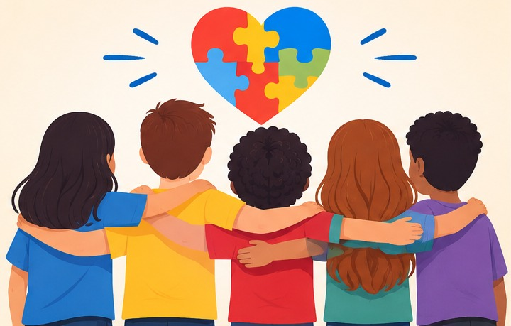
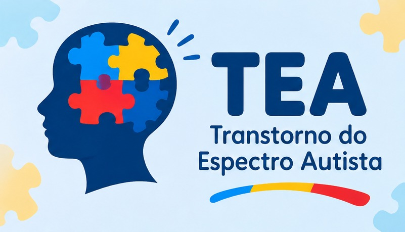

O Transtorno do Espectro Autista (TEA) é uma condição do neurodesenvolvimento. Informação, respeito e inclusão fazem a diferença.
Saiba maisO Transtorno do Espectro Autista é uma condição relacionada ao desenvolvimento do cérebro, que pode influenciar a comunicação, a interação social e o comportamento.
Cada pessoa autista possui características próprias, habilidades e necessidades diferentes. Por isso, é importante respeitar as individualidades.
Respeitar as diferenças e as individualidades de cada pessoa.
Combater o preconceito através do conhecimento.
Garantir oportunidades e participação na sociedade.
Algumas características podem estar presentes em pessoas autistas, mas não aparecem necessariamente da mesma forma em todas elas.
| Área | Características |
|---|---|
| Comunicação | Diferentes formas de comunicação e expressão. |
| Interação social | Diferentes maneiras de interagir socialmente. |
| Comportamento | Interesses específicos e preferência por rotinas. |
| Sensorial | Maior ou menor sensibilidade a estímulos. |

